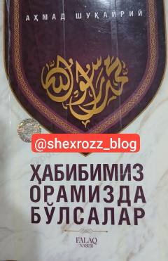

HOPayg'ambarimiz Muhammad sollallohu alayhi vasallamning hayotlari va go'zal axloqlari haqida asar.
Ushbu kitobda Payg'ambarimiz Muhammad sollallohu alayhi vasallamning hayotlari va axloqlari orqali u zotni bugungi kunimizda oramizda bo'lsalar, qanday yashagan bo'lardilar degan savolga javob izlanadi. Muallif o'quvchini Payg'ambarimizning go'zal xulqlari bilan yaqindan tanishtirib, ularga ergashishga chorlaydi.